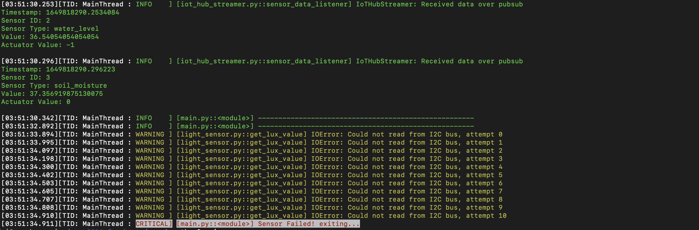
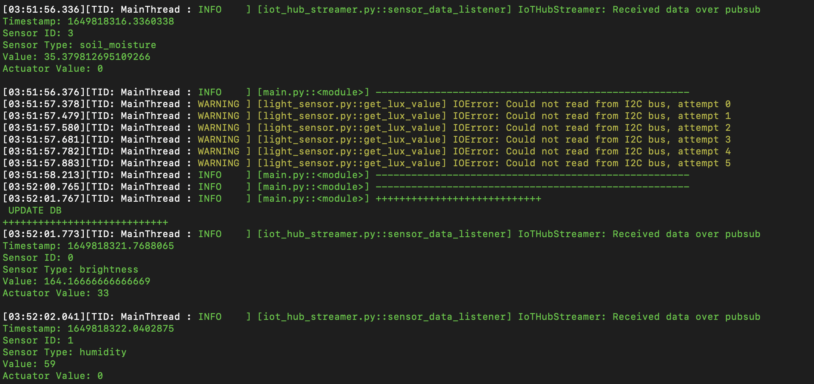

Summary of Achievements
Functional Requirements
| ID | Requirement Description | Type | Complete | Contributor |
|---|---|---|---|---|
| 1 | Set up a circuit system with three plants in a plastic container with devices connected (raspberry pi, sensors, and actuators). | Must have | ✓ | All |
| 2 | Implement data collection for brightness and humidity subsystems. Get input from sensors in regular intervals and store them on the raspberry pi. | Must have | ✓ | Szymon |
| 3 | Add control to the system (simple PID (Proportional Integral Derivative) control) for brightness and humidity subsystems. | Must have | ✓ | Harry |
| 4 | Create a simple user interface that displays sensor readings and actuation status. | Must have | ✓ | Angela |
| 5 | Create a cloud-based data collection and storage system using:
|
Should have | ✓ | Szymon |
| 6 | Allow the GUI to access the database and display data live. | Should have | ✓ | Angela |
| 7 | Implement data collection for water and heating subsystems. | Should have | ✓ | Szymon |
| 8 | Add control to the system for water subsystem. | Should have | ✓ | Szymon and Harry |
| 9 | Create a desktop App with a GUI:
|
Should have | ✓ | Angela |
| 10 | Scale and message suggestions are based on a configuration file containing all information about a specific plant profile. | Should have | ✓ | Angela |
| 11 | Allow user to upload their own configuration file for a different plant profile. | Should have | ✓ | Angela |
| 12 | Include a manual mode in the GUI where users can turn on/off the fans, sprinkler and LED lights, and also adjust the brightness. | Could have | ||
| 13 | Perform data analysis on the sensor data:
|
Could have | ||
| 14 | Continue AI model training with the system we have. | Could have | ||
| 15 | Add AI camera to the system:
|
Could have | ||
| 16 | Perform data analysis on the camera data:
|
Could have | ||
| 17 | Allow the camera to classify plants and detect stress levels of plants:
|
Could have |
Must/ Shoud have requirements: 100% Complete.
Optional could have requirements: 0% Complete
Non-functional Requirements
| ID | Requirement Description | Type | Complete | Contributor |
|---|---|---|---|---|
| 18 | Create an easy-to-use GUI that allows users to view profiles for each subsystem separately. Ensure response time to interaction is minimal. | Must have | ✓ | Angela |
| 19 | Ensure the system is scalable up to industry level: allowing up to thousands of sensor and actuator data to be collected by system and stored in database. | Must have | ✓ | Szymon and Harry |
| 20 | Ensure the actuation controlled by system is reliable and does not produce errors. | Must have | ✓ | Szymon and Harry |
| 21 | Ensure the system follows an extensible design, allowing new features to be easily added in the future. | Must have | ✓ | All |
| 22 | Ensure security of cloud services by ensuring all keys are kept privately and firewalls are set up correctly. | Must have | ✓ | Szymon |
| 23 | Ensure the data stored on database is available if there is internet connection. | Should have | ✓ | Szymon |
| 24 | Ensure the delay time between data being saved in database and time of data collection is no more than 30 seconds. | Should have | ✓ | Szymon |
| 25 | Write comprehensive documentation for all code. | Could have | ||
| 26 | Create CI/CD workflow for the documentation:
|
Could have | ||
| 27 | Have a complete code coverage when testing. | Could have |
Must/ Shoud have requirements: 100% Complete.
Optional could have requirements: 0% Complete
List of Bugs
- PID bug while implementing brightness subsystem. When implementing this analyzer using format PID, we realised that the hardware somehow kept turning the led PWM high and low, instead of working on a stable level. Unlike the humidity or soil moisture subsystems, brightness can be changed without any time lag and cannot be added up. That’s why our PID controller got confused and kept trying to fix it with larger and larger over fix. We fixed this bug by giving the controller output/feedback value a cap, as the led light we are using can only increase the brightness of the system, there’s no way to dim it if there’s a super bright light shining on our dark box.
- Humidity analyzer bug. When implementing this analyzer during testing, sometimes the DC fans will go the opposite direction. We found the reason is that it is trying to increase the system humidity but it is a piece of device that can only decrease humidity by changing air. We fixed this by setting a minimum cap for our feedback on the analyzer to set the value. Our system increase system humidity based on plant and water container passive evacuate.
-
Testing bug while implementing test using
pytestmock. The bug we met was as ourSensorandActuatorclasses are not compatible with our pytest mock, as we don’t have a return value or output directly. We end up testing those classes by using dummy outputs and checkout the actuation of hardware and the read from sensors. - The water level GUI has several blue rectangles being drawn on Canvas at the same time. This bug is due to the canvas didn’t delete the original rectangle after the newer one arrived. We fixed it by deleting the previous rectangle before drawing a new one.
-
Light sensor sometimes caused an exception to be thrown by the
smbuslibrary: an IO Error. After some research, we concluded it is the I2C bus losing the connection with the sensor temporarily. This was a dangerous bug, as it caused the program to crash and not turn off all peripherals correctly (LED remaining at the same brightness, fans still spinning, if the pump was mid pumping, it may have even continued pumping and flooded the system!). Our solution was to repeat the sensor reading attempts a few times, and if it still couldn't get a reading, raise aSensorExceptionexception, which gets caught in the main and gracefully exits the program, powering everything off.Here is a picture of the system failing after losing connection to the sensor, and shutting down.
And here it managed to recover, and continue running!
Individual Contribution
| Task | Angela (%) | Szymon (%) | Harry (%) |
|---|---|---|---|
| Client Liaison | 30 | 40 | 30 |
| Requirement Analysis | 33 | 33 | 33 |
| Research and Experiments | 25 | 40 | 35 |
| UI Design | 60 | 20 | 20 |
| Hardware Implementation | 5 | 60 | 35 |
| Coding | 25 | 42 | 33 |
| Testing | 40 | 30 | 30 |
| Report Website | 63 | 18 | 18 |
| Pitch Presentation | 33 | 33 | 33 |
| Blog Writing | 70 | 15 | 15 |
| Video Editing | 33 | 33 | 33 |
| Overall Contribution | 38 | 33 | 29 |
| Roles | UI designer, Lead Frontend Developer, Partial Backend Developer and Programmer for combining frontend and backend code. | Software/Hardware Team Lead, Edge Device Backend Architect, Cloud Side Solution Designer, and Backend Developer. | Hardware Circuit Designer, Programmer for Data Analysis and Backend Developer. |
Critical Evaluation of the Project
User Interface / User Experience
After testing the GUI on several test users, the feedback provided demonstrated that our design is simple and easy to use. All components of the GUI such as buttons, scales and graphs operate without errors and had a very short response time. Many users mentioned that the style of the buttons along with the consistent colour scheme and distinct frames for separating sections created an enjoyable user experience and enhanced the clarity of component indication. A key point in feedback was that users were able to use the system to its full potential with very few interactions which means that minimal effort and knowledge are required on the user's end to get farm information from the system.
There were a few further extensions suggested that could help improve the system:
- Allow buttons to change colour when the mouse is hovering above it.
- Add more graph features - for example, allow the user to enter the number of ticks shown on the x and y-axis, or control the number of sensor information being displayed on graph animation.
- Implement a config file parser to ensure only correct files can be loaded onto the system to avoid errors.
- Allow for manual control of system actuation.
For the set requirements, the UI design meets all the must and should have statements, and is relatively similar to the original prototype produced. However, we made the following changes for further improvements:
- The title ‘Water Level’ for the subsystem is changed to ‘Soil Moisture’ as we believe this is a better representation of the factor affecting the plant.
- On the profile page, we removed the ‘View Graph’ button and fit both the sensor value label with the live graph all in one frame as this uses up frame space more efficiently and reduced user action to obtain information on the current farm state.
- An extra water level frame is added to the profile page for Soil Moisture with a scale diagram to inform the user of the state of the water container.
- The ‘System Visualisation’ section is changed to ‘System Settings’ which adds a feature that allows the user to upload their configuration file for a specific plant profile.
Functionality
Overall, our project demonstrates a working example of how IoT devices can be controlled by the Raspberry Pi to produce a control system that can optimise plant growth through storing data on the Azure database, analysing input data and outputting PID control calculation results to actuators.
Stability
All data collected from the sensors and actuators are stored on the Azure SQL database which is stable and reliable. The latest version showed 99.99% availability, allowing data to be safely accessed from anywhere as long as there is an internet connection. In addition, due to firewalls being set up with a secure password that is kept secret with the user, stability in system security is guaranteed, ensuring data stored is accurate.
Our current implemented database can store up to 64MB of data. This can be easily extended with Azure if needed. Also, through tests, the Raspberry Pi can run for several hours at once for data collection to database. Since Azure is a reliable service, we can ensure that the data can be stored on cloud for as long as the needed.
Efficiency
We have designed our communication to ensure data is sent as efficiently as possible. This is done using multi-threading and through the publisher-subscriber design pattern. Multithreading allows PID calculations to be made in smaller time intervals than data collection intervals, allowing for a more accurate output value without increasing function calls for extra, unnecessary data collection. The GUI is implemented to only make one single connection with the database when the app is instantiated and closes the connection when the app is closed. This is a lot more efficient than opening and closing connections every time data access is needed at every regular interval which would be time-consuming.
Compatibility
The GUI is designed to display components visibly on any PC device, such as Linux (tested on Ubuntu 20.04lts) and Mac (tested on MacOS Big Sur 11.6.4) with no effect on performance. However, on different devices the GUI graphics may look a little different. We implemented our project on the Raspberry Pi 4 Grove kit. However, we have designed our system to work on any other versions of the Raspberry pi.
Maintainability
Our code is structured to maximise maintainability through firstly separating the front end (gui_code)
from the back end (src). The front end code is then grouped to have a ‘view’ module for each page.
For example the 'profile_view' stores all classes required to set up the page:
Each component, such as scale and graph, is abstracted into its class, isolating the code so that it is easier to
implement and add extra features if needed. Further, the ‘data_streamer' module is separate, containing files related
to database access only, which is then called by the main GUI app to obtain data. This eases the debugging process of
SQL queries by just looking at the data_streamer.
Under tools, we included the constants.py file to store features like frame padding and text font sizes so that the
values are consistently used across the whole GUI system. Not only does this reduce magic numbers, but it also allows
features to be changed by only changing one value.
The backend src is also structured into submodules:
For each subsystem, there is an actuator, analyser, and sensor placed in appropriate modules. To ensure messages sent through pubsub is maintained, we collated all topics into a config.ini file to organise and keep track. This also ensures that messages can be easily altered without going through the entire project folder.
Project Management
Our team uses Discord and Whatsapp as our main methods of communication. We use Notion to collate and share our portfolio notes and list of goals. We set up weekly meetings online to review our weekly to-do list and set members new tasks to complete for the following week. In addition, we use GitHub to share code, review code PRs, and open new issues to set members a debugging or code enhancement task to complete. We used Visual Studio Code Live Collaboration to carry out pair programming for some of the harder tasks to implement, such as sending data to and from the database. Overall we followed the Gantt chart to ensure our long term goals will be completed within the deadline. Every two weeks, we would write about the implementation processes in the blogs to keep track of progress.
Since our project is hardware-centred, we kept the components in one member’s apartment and met up in person once a week to work with it. This physically also allows us to discuss the separate parts we have worked on asynchronously and try to put the sections together. As it took up some time to confirm the hardware list with our client, order them, receive and assemble them, we had to plan our code implementation around the resources we have available. This meant that at the beginning of the project we spent more time on research and design, as it was difficult to implement the system without having all the components needed. In addition, we book weekly meetings with our client on Teams to keep him up to date with our current progress and thoughts for the next steps.
Future Work
One key feature in our Could-have requirements is to add an AI Camera to our system. The aim is to stream images of the the plants for the system to analyse and infer plant health, which can also give an insight to actuation performance in maintaining optimal growth conditions.
One camera model we could use is with the Microsoft AI Vision Kit by Elnfochips. This can be connected to any PC via internet connection and the images can be streamed using VLC with the camera RTSP address. Alternatively, another way to view camera data is via a physical HDMI cable.
Once a connection is made to stream a live video from AI camera to the GUI, we can apply ML. Here is a list of features we can implement with ML:
- Detect number of leaves in plant.
- Analyse the dry level of the plant.
- Detect plant disease symptoms such as spots.
- Analyse plant stress level.
Allow for more User Inputs
Our current GUI is designed to be easily extendable. For the options menu, we can add a scrolling feature as well as more buttons for the user to select. This allows future work on the project to include many more subsystems, such as soil pH level, each with its profile page with sensor and actuation information displayed. Further, we could add an option for each profile page to also view a graph for actuation value over time.
For the ‘Soil Moisture Level’ specifically, including an actuation graph would significantly improve clarity in showing the user, how the pumps are being operated. The graph could have a discrete on/off value for the y axis - it will take the value 1 when the pump is on and 0 when the pump is off, against time on the x-axis. This would allow the user to see how long the pump has been turned on and off.
Under the system settings section, we could allow the user to format the profile page to tailor to more specific needs, such as allowing them to adjust the number of ticks shown on the x and y-axis of the sensor graph. The number of sensor values shown on the graph could also be adjusted by a user with a slide of a given range. For example, allow the user the choose between 5 and 50 sensor values to be displayed on a graph against time.
For uploading a configuration file for a plant profile, we can extend the feature by allowing the user to edit the file on the GUI and allow them to save and select different plant profiles. The configuration file format can include a new variable called setpoint which allows the user to log specific desired setpoints for each subsystem that will be sent to the Raspberry Pi for the PID mechanism to generate an appropriate response.
Scaling Up to Industry Level
Currently, the system only has one sensor for each subsystem, but we have structured the SQL database to include sensor ID and sensor Type which allows the same sensor Type to have multiple sensor devices. This means that we can ultimately have a system with hundreds of sensor devices for each subsystem placed across a large area of farmland, allowing the user to monitor and control the overall state of the conditions with our system. Once scaled up, our solution could help with precision farming, allowing maximum yield, and thus reach towards solving the food production problems addressed to us by our client.
Edge Device (Raspberry Pi) Software Improvements
Further improvements on the Edge device could include:
- Creating a service running the startup script in the system:
- This would allow the system to run without an active ssh connection, and immediately start on device boot up.
- Moving the data processing to the cloud:
- Currently, the system processes all data on the Edge device - mainly control of the actuators based on the sensor input using PID controllers and other methods. This could however be hugely expanded and improved.
- With a strong internet connection, some parts of the data analysis (e.g. inferring environment status based on previous sensor and actuation values, deciding on actuation actions) could be moved out of the Raspberry Pi and to a Cloud model, trained and tested on the data generated by our system. This could be a self-improving system for tweaking PID control systems (increasing their speed and effectiveness), or even changing the target values for humidity, temperature or others, depending on the plant health/growth.
- Increasing test coverage of the system.
-
Currently, the system is focused mainly on providing a demonstratory solution with actual hardware and
living plants involved but lacks a deep and thorough test suite.
- This could be improved by wrapping all sensor and actuator classes into another level of abstraction, and creating emulated sensors and actuators, providing fake (but resembling real-life) values. This would allow for a fully digital system, without outside world dependencies (real-life sensor data), and more proper unit and coverage testing could be implemented.
- Another approach could involve dockerising the Raspbian image with the emulated sensors, and running the tests during development, including them in the CI/CD workflow of the process. For example, if the project is to continue on a GitHub repository, the image with testing scripts could be built and run as a Github Action on a Pull Request.
-
Currently, the system is focused mainly on providing a demonstratory solution with actual hardware and
living plants involved but lacks a deep and thorough test suite.
- Adding a CI/CD pipeline, including deployment using Azure IoT Edge.
- The current system contains a skeleton of a CI/CD pipeline, with a GitHub action for reviewing and linting code under a PR according to PEP8 standard.
- An improvement would be to add to the CD part: an automatic documentation deployment, and automatic deployment of the most recent program to the devices connected to the Azure IoT Hub using Azure IoT Edge. Improving the CI part could include adding dockerised Rpi Image building and running Unit Tests on Pull Requests.